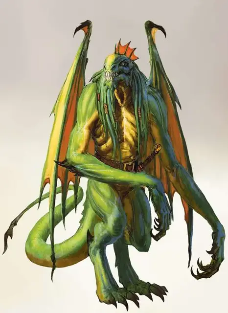

Зелёный абишай
Green Abishai
Среднее Исчадие (Дьявол), обычно законно-злое

Класс Доспеха 18 (природный доспех)
Хиты 195 (26к8 + 78)
Скорость 30 футов, летая 40 футов
| мод | спас | ||
|---|---|---|---|
| СИЛ | 12 | +1 | +1 |
| ЛОВ | 17 | +3 | +3 |
| ТЕЛ | 16 | +3 | +3 |
| мод | спас | ||
|---|---|---|---|
| ИНТ | 17 | +3 | +8 |
| МДР | 12 | +1 | +1 |
| ХАР | 19 | +4 | +9 |
Навыки Восприятие +6, Обман +9, Проницательность +6, Убеждение +9
Сопротивление урону холод; дробящий, колющий, рубящий от немагических атак, кроме нанесённых посеребрённым оружием
Иммунитет к урону огонь, яд
Иммунитет к состояниям отравление
Чувства тёмное зрение 120 футов, пассивное Восприятие 16
Языки Драконий, Инфернальный, Телепатия 120 фт.
Опасность 15 (13000 опыта)
Бонус мастерства +5
Среда обитания Город
Особенности
Дьявольское зрение. . Магическая тьма не мешает тёмному зрению абишая.
Сопротивление магии. Абишай совершает с преимуществом спасброски от заклинаний и прочих магических эффектов.
Действия
Мультиатака. Абишай совершает две атаки Когтями исчадия или одну атаку Когтями исчадия и накладывает одно заклинание с помощью Использования заклинаний.
Когти исчадия. Рукопашная атака оружием: +8 к попаданию, досягаемость 5 футов, одна цель. Попадание: 12 (2к8 + 3) урона силовым полем Если цель–существо, оно должно пройти спасбросок Телосложения Сл 16, в случае провала получая 11 (2к10) урона ядом и становясь отравленным на 1 минуту. Отравленная цель может совершать спасбросок в конце каждого своего хода, заканчивая эффект при удачном спасброске.
Использование заклинаний. Абишай накладывает одно из следующих заклинаний, используя Харизму в качестве базовой характеристики и без использования материальных компонентов (Сл спасброска от заклинаний 17):
• Неограниченно: маскировка [disguise self], малая иллюзия [minor illusion];
• 3/день каждое: очарование личности [charm person], обнаружение мыслей [detect thoughts], ужас [fear];
• 1/день каждое: смятение [confusion], подчинение личности [dominate person], множественное внушение [mass suggestion].
Описание
Каждый абишай когда-то был смертным, который каким-то образом завоевал милость Тиамат до своей смерти, и в качестве награды, его душа преобразовалась в отвратительного дьявола, чтобы служить ей в Девяти Преисподней.
Тиамат использует абишаев как агентов, отправляя их, чтобы представлять её интересы в Преисподней и по всей Мультивселенной. У некоторых простые задачи, такие как предоставление послания культистам или принятие на себя обязанностей, поклоняющихся выполнять чуждую миссию. Другие имеют более широкие обязанности, такие как ведение больших групп, убийство целей и участие в войсках. Во всех случаях абишаи фанатично лояльны к Тиамат, и при необходимости, готовы отдать свою жизнь.
Абишаи не входят в обычную иерархию Девяти Преисподней, имея свою собственную цепь командования, беспрекословно подчиняясь Тиамат (и Асмодею, когда тёмный лорд решает использовать их). Другие архидьяволы могут приказывать абишаям работать на них, но большинство из них редко делает это, так как никогда не ясно, выполняет ли абишай приказы Тиамат или Асмодея. Существует неотъемлемый риск того, что приказ, отданный Тиамат, может отмениться из-за вмешательства в планы Асмодея.
Зелёные абишаи. Зеленые абишаи искусны в добыче секретов и другой конфиденциальной информации, а благодаря их дипломатическим навыкам и волшебству, они могут манипулировать даже самыми проницательными противниками.